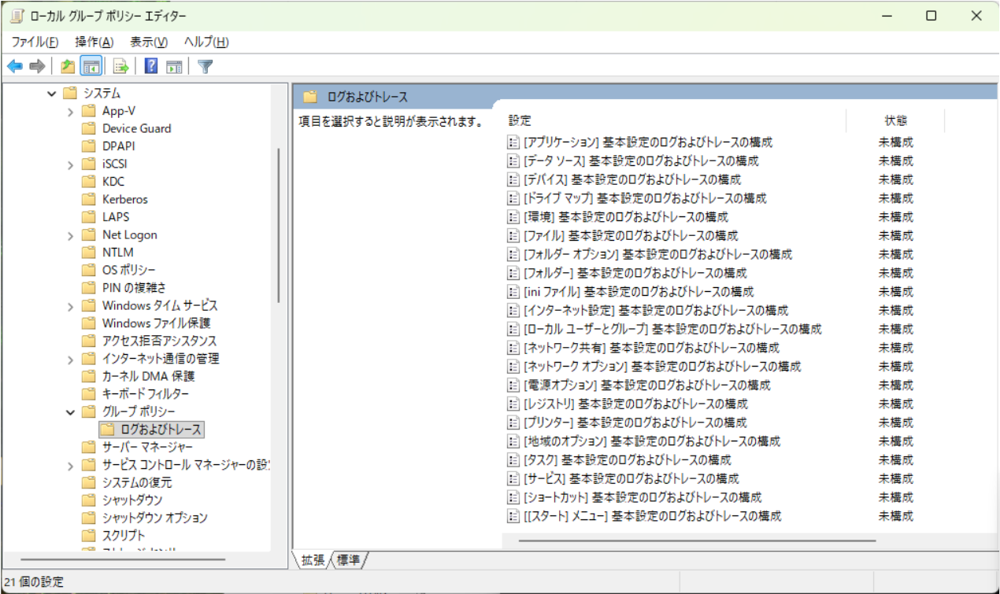

こんにちは。Windows Commercial Support Directory Services チームです。
本記事では、2026 年 2 月に公開されたグループ ポリシーの 6 つの強化点についてご案内いたします。
対象 OS:
Windows 11 24H2/25H2: 2026 年 2 月 24 日リリースの更新プログラムで既定で有効になります。
Windows Server 2022/2025: 2026 年 6 月 9 日リリースの更新プログラムで既定で有効になります。
(1) GPSVC ログのタイムスタンプ強化 概要:
// 2 月 24 日リリースの更新プログラム適用前のログ
1 2 GPSVC(1898.16b0) hh:mm:ss:fff RefreshPolicyForPrincipal: Entering with bMachine = 1, SID = null, options: 0, dwTimeout = 600000, currentProcessId = 6296, processImageName = C:\Windows\System32\gpupdate.exe GPSVC(1a4.2ad4) hh:mm:ss:fff Server_ProcessRefresh:: bMachine = 1, SID = null, bForceRefresh = 0, bRefreshAllUsers = 0, dwTimeout = 600000
// 2 月 24 日リリースの更新プログラム適用後のログ
1 2 GPSVC(7f0.2150) 2026-mm-dd hh:mm:ss:fff RefreshPolicyForPrincipal: Entering with bMachine = 0, SID = null, options: 1, dwTimeout = 600000, currentProcessId = 2032, processImageName = C:\Windows\System32\gpupdate.exe GPSVC(774.19ac) 2026-mm-dd hh:mm:ss:fff Server_ProcessRefresh:: bMachine = 0, SID = null, bForceRefresh = 1, bRefreshAllUsers = 0, dwTimeout = 600000
(2) registry.pol 破損検出 概要:
例 1: registry.pol が破損している場合
// これまでのメッセージ
The data is invalid.
// 更新プログラム適用後のメッセージ
Error during registry file parsing: Invalid file signature
1 2 3 4 5 6 7 8 9 10 11 12 13 14 15 16 17 18 19 20 21 22 23 24 25 26 27 28 29 30 31 32 33 34 35 36 37 38 39 40 41 42 ログの名前: System ソース: Microsoft-Windows-GroupPolicy 日付: 2026/mm/dd hh:mm:ss イベント ID: 1096 タスクのカテゴリ: なし レベル: エラー キーワード: ユーザー: SYSTEM コンピューター: xxxxxxxx.xxxxx.xxx 説明: グループ ポリシーの処理に失敗しました。グループ ポリシー オブジェクト LocalGPO のレジストリに基づいたポリシー設定を適用できませんでした。 このイベントが解決されるまで、グループ ポリシー設定は解決されません。エラーの原因となったファイル名およびパスの情報についてはイベントの詳細を参照してください。 イベント XML: <Event xmlns="http://schemas.microsoft.com/win/2004/08/events/event"> <System> <Provider Name="Microsoft-Windows-GroupPolicy" Guid="{aea1b4fa-97d1-45f2-a64c-4d69fffd92c9}" /> <EventID>1096</EventID> <Version>0</Version> <Level>2</Level> <Task>0</Task> <Opcode>1</Opcode> <Keywords>0x8000000000000000</Keywords> <TimeCreated SystemTime="2026-mm-ddThh:mm:ss.fffffffZ" /> <EventRecordID>2457</EventRecordID> <Correlation ActivityID="{5cf4894d-699b-4c8b-ac87-382c18cacba3}" /> <Execution ProcessID="7008" ThreadID="3164" /> <Channel>System</Channel> <Computer>xxxxxxxx.xxxxx.xxx</Computer> <Security UserID="S-1-5-18" /> </System> <EventData> <Data Name="SupportInfo1">2</Data> <Data Name="SupportInfo2">1732</Data> <Data Name="ProcessingMode">0</Data> <Data Name="ProcessingTimeInMilliseconds">375</Data> <Data Name="ErrorCode">13</Data> <Data Name="ErrorDescription">Error during registry file parsing: Invalid file signature</Data> <Data Name="DCName">\\xxxxxxxx.xxxxx.xxx</Data> <Data Name="GPOCNName">LocalGPO</Data> <Data Name="FilePath">C:\WINDOWS\System32\GroupPolicy\Machine\registry.pol</Data> </EventData> </Event>
例 2: SYSTEM アカウントに registry.pol へのアクセス権がない場合
// これまでのメッセージ
Access is denied.
// 更新プログラム適用後のメッセージ
Error during registry file parsing: CreateFile failed with 5
1 2 3 4 5 6 7 8 9 10 11 12 13 14 15 16 17 18 19 20 21 22 23 24 25 26 27 28 29 30 31 32 33 34 35 36 37 38 39 40 41 ログの名前: System ソース: Microsoft-Windows-GroupPolicy 日付: 2026/mm/dd hh:mm:ss イベント ID: 1096 タスクのカテゴリ: なし レベル: エラー キーワード: ユーザー: SYSTEM コンピューター: xxxxxxxx.xxxxx.xxx 説明: グループ ポリシーの処理に失敗しました。グループ ポリシー オブジェクト LocalGPO のレジストリに基づいたポリシー設定を適用できませんでした。このイベントが解決されるまで、グループ ポリシー設定は解決されません。エラーの原因となったファイル名およびパスの情報についてはイベントの詳細を参照してください。 イベント XML: <Event xmlns="http://schemas.microsoft.com/win/2004/08/events/event"> <System> <Provider Name="Microsoft-Windows-GroupPolicy" Guid="{aea1b4fa-97d1-45f2-a64c-4d69fffd92c9}" /> <EventID>1096</EventID> <Version>0</Version> <Level>2</Level> <Task>0</Task> <Opcode>1</Opcode> <Keywords>0x8000000000000000</Keywords> <TimeCreated SystemTime="2026-mm-ddThh:mm:ss.fffffffZ" /> <EventRecordID>2460</EventRecordID> <Correlation ActivityID="{ed96b5f8-0908-4e74-afaf-5b44da98421a}" /> <Execution ProcessID="7008" ThreadID="3164" /> <Channel>System</Channel> <Computer>xxxxxxxx.xxxxx.xxx</Computer> <Security UserID="S-1-5-18" /> </System> <EventData> <Data Name="SupportInfo1">2</Data> <Data Name="SupportInfo2">1732</Data> <Data Name="ProcessingMode">0</Data> <Data Name="ProcessingTimeInMilliseconds">375</Data> <Data Name="ErrorCode">5</Data> <Data Name="ErrorDescription">Error during registry file parsing: CreateFile failed with 5</Data> <Data Name="DCName">\\xxxxxxxx.xxxxx.xxx</Data> <Data Name="GPOCNName">LocalGPO</Data> <Data Name="FilePath">C:\WINDOWS\System32\GroupPolicy\Machine\registry.pol</Data> </EventData> </Event>
なお、これらのイベントが記録された際の GPSVC ログの出力内容には変更がなく、従来と同じ情報が記録されます。
(3) より詳細なエラー情報 概要:
// ID:4098
1 2 3 4 5 6 7 8 9 10 11 12 13 14 15 16 17 18 19 20 21 22 23 24 25 26 27 28 29 30 31 32 33 34 35 36 ログの名前: Application ソース: Group Policy Files 日付: 2026/mm/dd hh:mm:ss イベント ID: 4098 タスクのカテゴリ: (2) レベル: 警告 キーワード: クラシック ユーザー: SYSTEM コンピューター: xxxxxxxx.xxxxx.xxx 説明: 'GPP_File {D3ED5948-E3FD-411A-AAB1-AD1DF283EBB7}' グループ ポリシー オブジェクトの コンピューター 'GPP_File.txt' 基本設定項目は、エラー コード '0x80070002 指定されたファイルが見つかりません。' このエラーは非表示にされました。 で失敗したため適用されませんでした イベント XML: <Event xmlns="http://schemas.microsoft.com/win/2004/08/events/event"> <System> <Provider Name="Group Policy Files" /> <EventID Qualifiers="34305">4098</EventID> <Version>0</Version> <Level>3</Level> <Task>2</Task> <Opcode>0</Opcode> <Keywords>0x80000000000000</Keywords> <TimeCreated SystemTime="2026-mm-ddThh:mm:ss.fffffffZ" /> <EventRecordID>1214</EventRecordID> <Correlation /> <Execution ProcessID="9488" ThreadID="0" /> <Channel>Application</Channel> <Computer>xxxxxxxx.xxxxx.xxx</Computer> <Security UserID="S-1-5-18" /> </System> <EventData> <Data>コンピューター</Data> <Data>GPP_File.txt</Data> <Data>GPP_File {D3ED5948-E3FD-411A-AAB1-AD1DF283EBB7}</Data> <Data>0x80070002 指定されたファイルが見つかりません。</Data> </EventData> </Event>
// ID:4117 (追加されたイベント)
1 2 3 4 5 6 7 8 9 10 11 12 13 14 15 16 17 18 19 20 21 22 23 24 25 26 27 28 29 30 31 32 33 ログの名前: Application ソース: Group Policy Files 日付: 2026/mm/dd hh:mm:ss イベント ID: 4117 タスクのカテゴリ: (2) レベル: 警告 キーワード: クラシック ユーザー: SYSTEM コンピューター: xxxxxxxx.xxxxx.xxx 説明: グループ ポリシーのユーザー設定診断データ: Source file 'C:\Users\xxxxx\Desktop\GPP_File.txt' was not found when copying to 'C:\Users\xxxxxxxx$\Desktop\GPP_File.txt'. Error: 0x00000002 (HRESULT: 0x80070002)。 イベント XML: <Event xmlns="http://schemas.microsoft.com/win/2004/08/events/event"> <System> <Provider Name="Group Policy Files" /> <EventID Qualifiers="34305">4117</EventID> <Version>0</Version> <Level>3</Level> <Task>2</Task> <Opcode>0</Opcode> <Keywords>0x80000000000000</Keywords> <TimeCreated SystemTime="2026-mm-ddThh:mm:ss.fffffffZ" /> <EventRecordID>1213</EventRecordID> <Correlation /> <Execution ProcessID="9488" ThreadID="0" /> <Channel>Application</Channel> <Computer>xxxxxxxx.xxxxx.xxx</Computer> <Security UserID="S-1-5-18" /> </System> <EventData> <Data>Source file 'C:\Users\xxxxx\Desktop\GPP_File.txt' was not found when copying to 'C:\Users\xxxxxxxx$\Desktop\GPP_File.txt'. Error: 0x00000002 (HRESULT: 0x80070002)</Data> </EventData> </Event>
(4) 更新処理の実行元の特定 概要:
グループ ポリシーの更新処理を開始したユーザーやプロセスを確認できるようになりました。
これまでは、グループ ポリシーを手動で更新すると、イベント ID 4004 が記録されていました。
1 2 3 4 5 6 7 8 9 10 11 Log Name: Microsoft-Windows-GroupPolicy/Operational Source: Microsoft-Windows-GroupPolicy Date: mm/dd/2026 hh:mm:ss AM Event ID: 4004 Task Category: None Level: Information Keywords: User: SYSTEM Computer: xxxxxxxx.xxxxx.xxx Description: Starting manual processing of policy for computer xxxxx\xxxxxxxx$
今回の機能強化により、グループ ポリシーのイベント ログ (イベント ID 5321) と GPSVC ログで、手動で更新処理を開始したユーザーやプロセスを確認できるようになりました。
// gpsvc.log
GPSVC(13b8.acc) 2026-mm-dd hh:mm:ss:fff RefreshPolicyForPrincipal: Entering with bMachine = 0, SID = null, options: 1, dwTimeout = 600000, currentProcessId = 5048, processImageName = C:\Windows\System32\gpupdate.exe
GPSVC(2078.340) 2026-mm-dd hh:mm:ss:fff Server_ProcessRefresh:: bMachine = 0, SID = null, bForceRefresh = 1, bRefreshAllUsers = 0, dwTimeout = 600000
GPSVC(2078.1ea8) 2026-mm-dd hh:mm:ss:fff Machine Broadcast Sent successfully to session 0
GPSVC(2078.24a4) 2026-mm-dd hh:mm:ss:fff StartTaskScheduler status: 0x0
GPSVC(2078.24a4) 2026-mm-dd hh:mm:ss:fff UpdateWNFTrigger has 2 triggers to process.
GPSVC(2078.340) 2026-mm-dd hh:mm:ss:fff GP Refresh Attribution: Target=User ParentProcess="C:\Windows\System32\cmd.exe" ParentPID=1596
GPUpdatePID=5048 SessionID=1 Account="xxxxx\xxxxx"
// グループ ポリシーのイベント ログ (イベント ID 5321)
1 2 3 4 5 6 7 8 9 10 11 ログの名前: Microsoft-Windows-GroupPolicy/Operational ソース: Microsoft-Windows-GroupPolicy 日付: 2026/mm/dd hh:mm:ss イベント ID: 5321 タスクのカテゴリ: なし レベル: 情報 キーワード: ユーザー: SYSTEM コンピューター: xxxxxxxx.xxxxx.xxx 説明: GP Refresh Attribution パラメーター: Group Policy refresh. Target=User ParentProcess="C:\Windows\System32\cmd.exe" ParentPID=1596 GPUpdatePID=5048 SessionID=1 Account="xxxxx\xxxxx"
定期的な自動更新についても、実行元の情報がグループ ポリシーのイベント ログと GPSVC ログに記録されるようになりました。
// gpsvc.log
GPSVC(12cc.151c) 2026-mm-dd hh:mm:ss:fff Server_ProcessRefresh:: bMachine = 1, SID = null, bForceRefresh = 0, bRefreshAllUsers = 0, dwTimeout = 600000
GPSVC(12cc.151c) 2026-mm-dd hh:mm:ss:fff GP Refresh Attribution: Target=Machine ParentProcess="C:\Windows\System32\svchost.exe [Schedule]" ParentPID=2344 GPUpdatePID=2292 SessionID=0 Account="NT AUTHORITY\NETWORK SERVICE"
GPSVC(12cc.151c) 2026-mm-dd hh:mm:ss:fff CGPApplicationService::RefreshEvent fired.
// グループ ポリシーのイベント ログ (イベント ID 5321)
1 2 3 4 5 6 7 8 9 10 11 ログの名前: Microsoft-Windows-GroupPolicy/Operational ソース: Microsoft-Windows-GroupPolicy 日付: 2026/mm/dd hh:mm:ss イベント ID: 5321 タスクのカテゴリ: なし レベル: 情報 キーワード: ユーザー: SYSTEM コンピューター: xxxxxxxx.xxxxx.xxx 説明: GP Refresh Attribution パラメーター: Group Policy refresh. Target=Machine ParentProcess="C:\Windows\System32\svchost.exe [Schedule]" ParentPID=2344 GPUpdatePID=2292 SessionID=0 Account="NT AUTHORITY\NETWORK SERVICE"
API (RefreshPolicy / RefreshPolicyEx) を使用するプログラムから更新処理を実行した場合は、以下のように記録されます。
// gpsvc.log
GPSVC(624.5c8) 2026-mm-dd hh:mm:ss:fff Server_ProcessRefresh:: bMachine = 1, SID = null, bForceRefresh = 1, bRefreshAllUsers = 0, dwTimeout = 0
GPSVC(624.5c8) 2026-mm-dd hh:mm:ss:fff RPC Call Attribution: Target=Machine ParentProcess="C:\Windows\System32\cmd.exe" ParentPID=1436 RpcClient="C:\Windows\Temp\GPRefresh-bb92169da30a40948c2912b78d5f4ef6\gprefresh.exe" RpcClientPID=476 SessionID=0 Account="xxxxx\xxxxx"
// グループ ポリシーのイベント ログ (イベント ID 5321)
1 2 3 4 5 6 7 8 9 10 11 ログの名前: Microsoft-Windows-GroupPolicy/Operational ソース: Microsoft-Windows-GroupPolicy 日付: 2026/mm/dd hh:mm:ss イベント ID: 5321 タスクのカテゴリ: なし レベル: 情報 キーワード: ユーザー: SYSTEM コンピューター: xxxxxxxx.xxxxx.xxx 説明: GP Refresh Attribution パラメーター: Group Policy refresh via RPC. Target=Machine ParentProcess="C:\Windows\System32\cmd.exe" ParentPID=1436 RpcClient="C:\Windows\Temp\GPRefresh-bb92169da30a40948c2912b78d5f4ef6\gprefresh.exe" RpcClientPID=476 SessionID=0 Account="xxxxx\xxxxx"
タスク スケジューラから更新処理を実行した場合は、以下のように記録されます。
// gpsvc.log
GPSVC(624.156c) 2026-mm-dd hh:mm:ss:fff Server_ProcessRefresh:: bMachine = 1, SID = null, bForceRefresh = 1, bRefreshAllUsers = 0, dwTimeout = 600000
GPSVC(624.156c) 2026-mm-dd hh:mm:ss:fff GP Refresh Attribution: Target=Machine ParentProcess="C:\Windows\System32\svchost.exe [Schedule]" ParentPID=1900 GPUpdatePID=5376 SessionID=0 Account="NT AUTHORITY\NETWORK SERVICE"
// グループ ポリシーのイベント ログ (イベント ID 5321)
1 2 3 4 5 6 7 8 9 10 11 ログの名前: Microsoft-Windows-GroupPolicy/Operational ソース: Microsoft-Windows-GroupPolicy 日付: 2026/mm/dd hh:mm:ss イベント ID: 5321 タスクのカテゴリ: なし レベル: 情報 キーワード: ユーザー: SYSTEM コンピューター: xxxxxxxx.xxxxx.xxx 説明: GP Refresh Attribution パラメーター: Group Policy refresh. Target=Machine ParentProcess="C:\Windows\System32\svchost.exe [Schedule]" ParentPID=1900 GPUpdatePID=5376 SessionID=0 Account="NT AUTHORITY\NETWORK SERVICE"
// Microsoft-Windows-TaskScheduler/Operational イベント ログ (イベント ID 129)
1 2 3 4 5 6 7 8 9 10 11 ログの名前: Microsoft-Windows-TaskScheduler/Operational ソース: Microsoft-Windows-TaskScheduler 日付: 2026/mm/dd hh:mm:ss イベント ID: 129 タスクのカテゴリ: Created Task Process レベル: 情報 キーワード: ユーザー: SYSTEM コンピューター: xxxxxxxx.xxxxx.xxx 説明: タスク スケジューラは、プロセス ID 5376 でタスク "\Microsoft\Windows\GroupPolicy\GPUpdate"、インスタンス "C:\Windows\System32\gpupdate.exe" を起動しました。
ローカル セキュリティ ポリシー (secpol.msc) で監査ポリシーの詳細な構成を変更した場合も、以下のように記録されます。
// gpsvc.log
GPSVC(bd8.b68) 2026-mm-dd hh:mm:ss:fff RefreshPolicyForPrincipal: Entering with bMachine = 1, SID = null, options: 0, dwTimeout = 0, currentProcessId = 3032, processImageName = C:\Windows\System32\mmc.exe
GPSVC(498.4fc) 2026-mm-dd hh:mm:ss:fff Server_ProcessRefresh:: bMachine = 1, SID = null, bForceRefresh = 0, bRefreshAllUsers = 0, dwTimeout = 0
GPSVC(498.4fc) 2026-mm-dd hh:mm:ss:fff RPC Call Attribution: Target=Machine ParentProcess="C:\Windows\System32\cmd.exe" ParentPID=9864 RpcClient="C:\Windows\System32\mmc.exe [SECPOL.MSC]" RpcClientPID=3032 SessionID=1 Account="xxxxx\xxxxx"
// グループ ポリシーのイベント ログ (イベント ID 5321)
1 2 3 4 5 6 7 8 9 10 11 ログの名前: Microsoft-Windows-GroupPolicy/Operational ソース: Microsoft-Windows-GroupPolicy 日付: 2026/mm/dd hh:mm:ss イベント ID: 5321 タスクのカテゴリ: なし レベル: 情報 キーワード: ユーザー: SYSTEM コンピューター: xxxxxxxx.xxxxx.xxx 説明: GP Refresh Attribution パラメーター: Group Policy refresh via RPC. Target=Machine ParentProcess="C:\Windows\System32\cmd.exe" ParentPID=9864 RpcClient="C:\Windows\System32\mmc.exe [SECPOL.MSC]" RpcClientPID=3032 SessionID=1 Account="xxxxx\xxxxx"
(5) GPP デバッグ ログの有効化 概要:
// 2 月 24 日リリースの更新プログラム適用後

(6) Critical Section ロック検出 概要:
例: グループ ポリシーの処理が 10 分間応答しなくなる場合などに、原因を特定できるようになりました。
GPSVC ログを有効にすると、ロックを保持しているプロセスを特定できます。
① gpupdate /force 開始 1 GPSVC(7f0.2440) 2026-mm-dd hh:mm:ss:fff RefreshPolicyForPrincipal: Entering with bMachine = 1, SID = null, options: 1, dwTimeout = 600000, currentProcessId = 2032, processImageName = C:\Windows\System32\gpupdate.exe
② Writer ロック競合の発生 1 2 3 GPSVC(774.1534) 2026-mm-dd hh:mm:ss:fff Global Sync Lock Called GPSVC(774.1534) 2026-mm-dd hh:mm:ss:fff Writer has to wait for lock. WriterID : 1. GPSVC(774.1534) 2026-mm-dd hh:mm:ss:fff Lock timeout changed to 10 minutes for external reader.
③ gpupdate.exe へのエラー返却 1 2 GPSVC(774.19ac) 2026-mm-dd hh:mm:ss:fff CGroupPolicySession::RefreshGroupPolicyForPrincipal: Failed WaitForSingleObject. GPSVC(7f0.2440) 2026-mm-dd hh:mm:ss:fff Client_ProcessRefresh: ProcessRefresh returned error 0x5b4
0x5b4 は ERROR_TIMEOUT (1460) を示し、gpupdate.exe にタイムアウト エラーが返されています。
④ タイムアウト発生と強制解放 1 2 3 4 GPSVC(774.1534) 2026-mm-dd hh:mm:ss:fff Wait Timed out GPSVC(774.1534) 2026-mm-dd hh:mm:ss:fff Global ForceUnLockReaders GPSVC(774.1534) 2026-mm-dd hh:mm:ss:fff ForceUnlockReader(0000029F3713CBE0): Held duration: 616821 milliseconds GPSVC(774.1534) 2026-mm-dd hh:mm:ss:fff ForceUnlockReader(0000029F3713CBE0): Held:0:10:16.821 dwFlags:0x30000000 PID:0x1674 - C:\Windows\System32\WindowsPowerShell\v1.0\powershell.exe
PID : ロックを保持していたプロセスの PIDプロセス パス : ロックを保持していたプロセスの実行ファイルのパス
⑤ ポリシー適用完了 1 2 3 4 GPSVC(774.1534) 2026-mm-dd hh:mm:ss:fff ProcessGPOList:++ Entering for extension レジストリ GPSVC(774.1534) 2026-mm-dd hh:mm:ss:fff ProcessGPOList: Extension レジストリ was able to log data. RsopStatus = 0x0, dwRet = 0, Clearing the dirty bit GPSVC(774.1534) 2026-mm-dd hh:mm:ss:fff ProcessGPOList:++ Entering for extension Security GPSVC(774.1534) 2026-mm-dd hh:mm:ss:fff ProcessGPOList: Extension Security returned 0x0.
強制解放後、レジストリ拡張と Security 拡張が正常に処理されています。
補足: GPSVC ログの取得方法 本記事で紹介したログは、以下の方法で取得できます。
gpsvc.log 管理者権限のコマンド プロンプトで、次のコマンドを実行します。
// 開始
1 reg add "HKLM\Software\Microsoft\Windows NT\CurrentVersion\Diagnostics" /v "GPSvcDebugLevel" /t REG_DWORD /d 0x30002
// 停止
1 reg delete "HKLM\Software\Microsoft\Windows NT\CurrentVersion\Diagnostics" /v "GPSvcDebugLevel" /f
更新履歴 2026/10/23 : 本ブログの公開